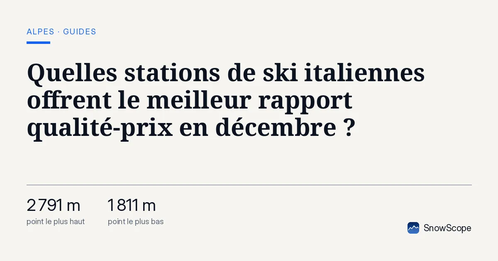

Quelles stations de ski italiennes offrent le meilleur rapport qualité-prix en décembre ?
Pour un week-end en voiture depuis la ville la plus proche en décembre 2026, Livigno et Monterosa Ski associent les tarifs vérifiés les plus bas à un enneigement fiable en altitude, tandis que Pila garde un tarif unique. Le bas des pistes manque souvent de neige au début. Notre historique d'enneigement de 46 hivers passés montre quand la neige devient régulière à mi-hauteur.
Consultez les prévisions neige en temps réel pour Livigno sur l'application SnowScopeHauteurs de neige, alertes poudreuse et carte 3D, gratuitement.
Trouver l'équilibre entre prix du forfait et neige de décembre
Un bon rapport qualité-prix, c'est payer moins aux caisses sans skier sur des pistes basses peu enneigées. Livigno baisse son forfait adulte 1 jour à 51,50 EUR et son forfait 6 jours à 258,50 EUR du 28 novembre au 18 décembre 2026. Monterosa Ski propose le tarif en ligne 1 jour vérifié le plus bas à 40,00 EUR, montant à 71,00 EUR aux dates de pointe.
Pila applique un tarif unique du 28 novembre 2026 au 11 avril 2027 : 60,00 EUR pour 1 jour et 322,00 EUR pour 6 jours. Courmayeur affiche 75,00 EUR pour le forfait 1 jour et 396,00 EUR pour le forfait 6 jours. Les tarifs de La Thuile et de Sestriere n'ont pas été vérifiés.

Les premières semaines du 1er au 14 décembre
Selon notre historique d'enneigement de 46 hivers passés, les remontées au pied des pistes ont du mal au tout début. Du 1er au 7 décembre, Monterosa Ski à 1 207 m atteint 30 cm dans 0 % des hivers passés, et Sestriere à 1 600 m atteint 30 cm dans 26 % des cas. Livigno à 1 811 m atteint 30 cm dans 30 % des hivers du 1er au 7 décembre et 39 % du 8 au 14 décembre.
Monter à mi-altitude change complètement le week-end. Du 8 au 14 décembre, La Thuile à 2 038 m atteint 30 cm dans 91 % des hivers passés, Courmayeur à 1 976 m dans 87 %, Pila à 2 128 m dans 76 %, et Livigno à 2 301 m dans 70 %. Les remontées du haut atteignent 30 cm dans au moins 93 % des cas partout.
La suite du mois du 15 au 28 décembre
La neige s'accumule vite après la mi-décembre, mais la tarification dynamique grimpe. Du 15 au 21 décembre, la mi-altitude atteint 30 cm dans 100 % des hivers passés à La Thuile, 98 % à Courmayeur et 85 % à Livigno, Pila et Sestriere. Du 22 au 28 décembre, même Monterosa Ski à 2 118 m atteint 30 cm dans 80 % des hivers passés.
Bien choisir ses dates permet d'économiser à Livigno. Son forfait promotionnel à 51,50 EUR court jusqu'au 18 décembre 2026, couvrant la majeure partie de la semaine du 15 au 21 décembre, quand la mi-altitude garde 50 cm dans 50 % des hivers passés et le sommet à 2 791 m garde 50 cm dans 87 % des cas. Les forfaits passent à 66,00 EUR du 19 au 25 décembre 2026, puis à 74,50 EUR.
Les stations comparées côte à côte
Livigno offre 83 km de pistes cartographiées et 37 remontées cartographiées sur 979 m de dénivelé, avec des hauteurs de neige habituelles le 15 décembre de 27 cm à 1 811 m, 45 cm à 2 301 m et 81 cm à 2 791 m. Monterosa Ski compte 72 km de pistes cartographiées, 37 remontées cartographiées et 1 823 m de dénivelé jusqu'à 3 030 m, où le 15 décembre affiche en moyenne 127 cm, alors que sa base à 1 207 m affiche en moyenne 6 cm, de 0 cm lors d'un décembre maigre à 24 cm lors d'un décembre généreux.
Pila dispose de 56 km de pistes cartographiées et 16 remontées cartographiées sur 1 190 m de dénivelé, avec des moyennes de 33 cm, 44 cm et 79 cm le 15 décembre. Courmayeur propose 42 km de pistes cartographiées et 24 remontées cartographiées sur 1 545 m de dénivelé, avec des moyennes de 38 cm, 66 cm et 131 cm le 15 décembre, allant de 60 cm lors d'un décembre sec à 225 cm lors d'un décembre abondant à 2 749 m.
La Thuile offre 79 km de pistes cartographiées, 17 remontées cartographiées et 1 140 m de dénivelé, avec une moyenne de 67 cm à 2 038 m en décembre, tandis que Sestriere propose 58 km de pistes cartographiées, 22 remontées cartographiées et 1 186 m de dénivelé, avec une moyenne de 51 cm à 2 193 m ; leurs tarifs n'ont pas été vérifiés. Entre les 15 premiers hivers et les 15 derniers hivers, la hauteur de neige en décembre à mi-altitude a augmenté à Livigno de 39 cm à 52 cm, à Sestriere de 43 cm à 57 cm, à La Thuile de 64 cm à 73 cm, à Pila de 42 cm à 49 cm et à Courmayeur de 63 cm à 69 cm, tandis que Monterosa Ski est restée stable à 37 cm.
Des astuces pour payer moins cher
Pour un week-end en voiture, caler son calendrier permet de réduire le prix du forfait. Venir à Livigno entre le 8 et le 18 décembre 2026 garantit 51,50 EUR une fois que la probabilité d'avoir 30 cm à mi-altitude dépasse 70 %. Pour la fin décembre, le tarif fixe de 60,00 EUR à Pila bat le tarif haute saison de 74,50 EUR à Livigno et celui de 75,00 EUR à Courmayeur.
Consultez le calendrier en ligne de Monterosa Ski pour repérer les journées à 40,00 EUR et skiez sur les remontées d'altitude. Avec 0 cm lors d'un mois de décembre pauvre en neige à 1 207 m, organisez votre journée autour de la mi-altitude à 2 118 m et du sommet à 3 030 m.
Conseils aux skieurs
- Réservez à Livigno entre le 8 et le 18 décembre 2026 pour profiter du forfait 1 jour à 51,50 EUR ou 6 jours à 258,50 EUR, quand la probabilité de 30 cm à mi-altitude atteint 70 % à 85 %.
- Choisissez le forfait 1 jour à tarif fixe de 60,00 EUR à Pila du 22 au 28 décembre 2026, quand la mi-altitude atteint 30 cm dans 89 % des hivers passés.
- Consultez Monterosa Ski en ligne pour trouver des journées à 40,00 EUR et skiez autour de 2 118 m et 3 030 m plutôt qu'au pied des pistes à 1 207 m.
- Consultez le bulletin d'avalanche avant toute sortie hors-piste au-dessus de 2 723 m, et vérifiez les sites officiels pour les tarifs de La Thuile et Sestriere.
Autres cartes (sites externes)
Références et crédits
- Livigno, official ski pass price list 2026-27 (PDF) www.livigno.eu/hubfs/tariffe_26-27.pdf
- Courmayeur Mont Blanc, official daily ski pass prices 2026-27 www.courmayeur-montblanc.com/skipass-e-tariffe/tariffe-giornaliere/
- Pila, official daily ski pass prices 2026-27 pila.it/en/skipass-pila/daily-skipass/
- Monterosa Ski, official dynamic pricing page 2026-27 monterosaski.eu/en/tariffazione-dinamica-monterosa-ski-19318
- SnowScope, December snow at three heights and today's snow map snowscope.app/
À propos de ces chiffres
Chiffres de neige : historique SnowScope, 46 hivers passés (1980-81 à 2025-26) à trois altitudes de chaque station (un modèle du passé corrigé de l'altitude : une estimation pour une zone, pas des mesures de la station) ; chiffres de décembre calculés à partir des hauteurs quotidiennes de ces hivers. Neige actuelle et tendance à deux semaines : prévisions SnowScope (tendance ECMWF et GFS, une fourchette, pas une promesse). Remontées et pistes : cartographie OpenSkiMap. Prix : pages officielles des stations ci-dessous, lues le 2026-11-13 ; les prix peuvent changer, vérifiez avant de réserver.
Citer ce bulletin
Pour la recherche, l'enseignement ou la presse : chiffres et graphiques réutilisables librement sous CC BY 4.0 avec cette citation.
SnowScope (2026), Quelles stations de ski italiennes offrent le meilleur rapport qualité-prix en décembre ?, https://snowscope.app/blog/fr/2026/11/italy-best-value-december-ski-weeks-2026.html, consulté le 2026-11-14
SnowScope (Atlas Labs). (2026, November 14). Quelles stations de ski italiennes offrent le meilleur rapport qualité-prix en décembre ?. SnowScope snow reports. https://snowscope.app/blog/fr/2026/11/italy-best-value-december-ski-weeks-2026.html
BibTeX
@misc{snowscope2026italybestvaluedecembersk,
author = {{SnowScope (Atlas Labs)}},
title = {Quelles stations de ski italiennes offrent le meilleur rapport qualité-prix en décembre ?},
year = {2026},
month = nov,
howpublished = {\url{https://snowscope.app/blog/fr/2026/11/italy-best-value-december-ski-weeks-2026.html}},
note = {Published 2026-11-14 13:29 UTC; accessed 2026-11-14}
}· CC BY 4.0 · Méthodes, données et outils →
Livigno : neige et température selon l'altitude, cet hiver vs l'hiver dernier (outils) →
Suivre Livigno
Gratuit : un message quand la neige arrive, et la météo chaque matin.
Autres bulletins neige

À Monterosa Ski, le forfait journée en ligne va de 40,00 à 71,00 EUR. En décembre, la neige est en altitude : 124 cm habituels à 3 030 m, 6 cm à 1 207 m.

Sur 46 hivers, les stations du versant italien et des Alpes du Sud françaises ont connu 24 fois un hiver relativement plus généreux que le versant nord. Le graphique, les grandes années et la météo qui les explique.